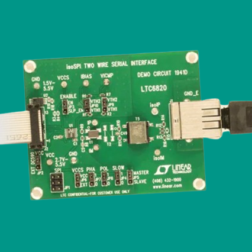

Battery Management System (BMS)
View Code ↗During my tenure at Powersoft 19, I designed and developed a Battery Management System (BMS) for monitoring and controlling battery cells in a classified application. This project involved the integration of the LTC6804 battery cell monitor IC with an STM32 microcontroller, utilizing the DC1941D isoSPI-to-SPI converter module from Analog Devices. I also developed a desktop application using .NET and C# to provide a user interface for data visualization and control.
Project Overview
The Battery Management System was designed to monitor and manage a stack of battery cells, ensuring safe operation by tracking key parameters such as voltage, temperature, state of charge (SoC), and state of health (SoH). The system used the LTC6804 IC to interface directly with the battery cells, communicating over isoSPI via the DC1941D module to an STM32 microcontroller. The STM32 processed the data and transmitted it over CANbus to other nodes in the system, while a desktop application provided real-time monitoring and control capabilities.
System Architecture
The BMS architecture centered around the LTC6804, a high-precision battery monitoring IC capable of measuring up to 12 cells in series with a total measurement error of less than 1.2 mV. The LTC6804 communicated over isoSPI, a differential communication protocol that ensures robust data transmission in noisy environments. The DC1941D module converted the isoSPI signals to standard SPI, which was then interfaced with an STM32F4 microcontroller.
The STM32 handled data acquisition, processing, and communication. It used SPI to retrieve cell voltages and temperatures from the LTC6804, and UART for receiving control commands (e.g., setting charge/discharge limits). The processed data was transmitted over CANbus using a predefined message format, allowing any node on the network to access the BMS data. A second STM32 node was configured to receive and log this data for redundancy and system-level integration.
Note: I have taken this image from Analog Devices.
Data Acquisition and Processing
The LTC6804 was configured to perform continuous monitoring of the battery stack, measuring cell voltages with 16-bit resolution and temperatures via external thermistors. The STM32 firmware implemented a polling mechanism to retrieve data from the LTC6804 at a rate of 10 Hz, ensuring real-time monitoring. The raw data was filtered using a moving average algorithm to reduce noise, and the SoC was calculated using a coulomb-counting method combined with a lookup table for improved accuracy.
Safety features included overvoltage, undervoltage, and overtemperature detection, with configurable thresholds set via UART commands. If any parameter exceeded the defined limits, the STM32 triggered a fault condition, halting charge/discharge operations and sending an alert over CANbus.
Communication and Control
The STM32 used CANbus to transmit BMS data to other nodes in the system. The CAN messages followed a custom protocol, with each message containing a unique identifier, cell data (voltage, temperature, SoC), and fault status. This allowed for seamless integration with other system components, such as a master controller or a data logger.
Control commands were sent to the STM32 via UART from an external device. These commands included setting charge/discharge limits, enabling/disabling balancing, and requesting diagnostic data. The firmware included a command parser to interpret and execute these instructions, with error checking to ensure reliable operation.
Desktop Application Development
To provide a user-friendly interface, I developed a desktop application using .NET Framework and C#. The application communicated with the STM32 over Ethernet using a TCP/IP socket, receiving BMS data in real-time. The GUI was built with WPF (Windows Presentation Foundation) and featured:
- Real-time graphs of cell voltages, temperatures, and SoC using a charting library (e.g., LiveCharts).
- Individual cell data display with color-coded indicators for fault conditions.
- Controls to set charge/discharge limits and enable/disable cell balancing.
- A diagnostic panel for viewing system status and fault logs.
The application implemented a multi-threaded architecture to handle data streaming and UI updates concurrently, ensuring a responsive user experience. Data was parsed and stored in a local SQLite database for historical analysis, with export functionality to CSV for further processing.
Workflow
The development of the BMS followed a structured workflow to ensure reliability and performance:
- Hardware Setup: Connected the battery cells to the LTC6804 IC, interfaced with the DC1941D module, and connected the module to the STM32 via SPI.
- Firmware Development: Wrote STM32 firmware to handle SPI communication with the LTC6804, UART for control, and CANbus for data transmission. Implemented data processing algorithms (filtering, SoC calculation) and safety features.
- Communication Testing: Validated CANbus communication with a secondary STM32 node, ensuring data integrity and proper message formatting.
- Desktop Application Development: Built the .NET application with WPF, integrating real-time data streaming over Ethernet, graphical visualization, and control features.
- System Integration: Integrated the hardware and software components, testing the BMS under various operating conditions (e.g., high load, fault scenarios).
- Deployment and Validation: Deployed the system in a controlled environment at Powersoft 19, validating its performance against design specifications.
Skills Involved
- Embedded Systems: Programming the STM32 microcontroller for SPI, UART, and CANbus communication.
- Battery Management: Configuring and interfacing with the LTC6804 IC, implementing SoC and safety algorithms.
- Communication Protocols: Using isoSPI (via DC1941D), SPI, UART, CANbus, and Ethernet for robust data transfer.
- Firmware Development: Writing efficient C code for the STM32, with a focus on real-time processing and fault handling.
- Software Development: Developing a .NET desktop application with C# and WPF, including multi-threading, data visualization, and database integration.
- System Integration: Combining hardware and software components to create a cohesive BMS solution.
- Debugging and Testing: Using tools like oscilloscopes, logic analyzers, and CANbus sniffers to validate system performance.
This project at Powersoft 19 was a significant undertaking that enhanced my expertise in embedded systems, battery management, and software development. Despite the classified nature of the project, it demonstrated my ability to design and implement a complex, safety-critical system with robust hardware-software integration.